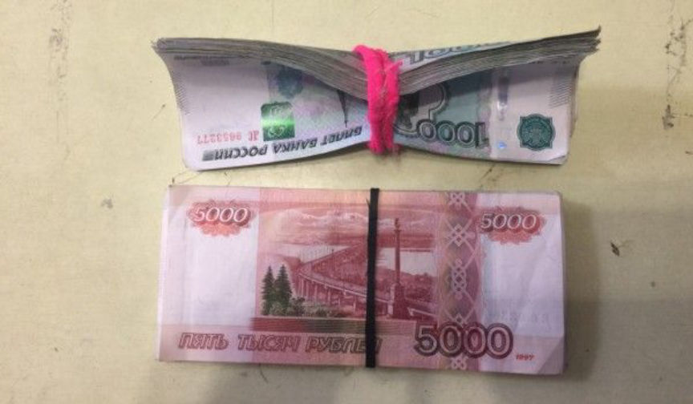
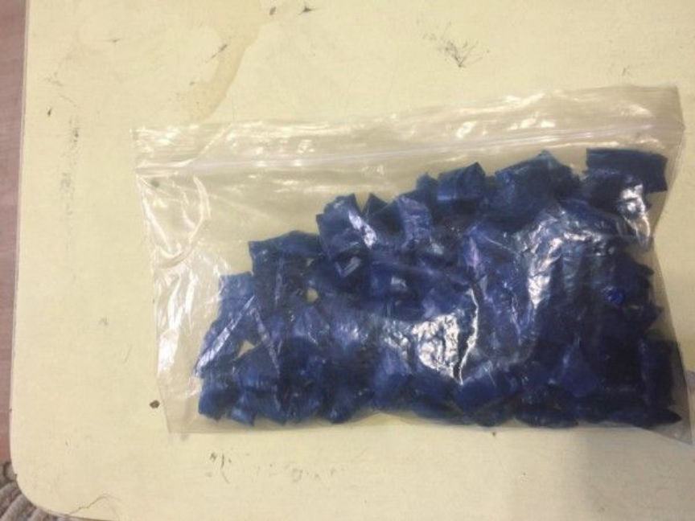
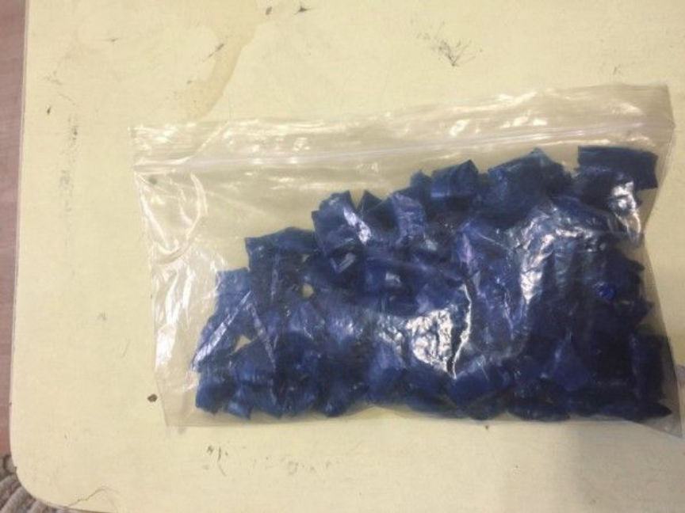

Russian Law Enforcement Arrested a Darkweb Drug Dealer
~1 min read | Published on 2018-10-17, tagged Arrested, Darkweb-Vendor, General-News using 210 words.
Earlier this year, the Ministry of Internal Affairs of Russia arrested a drug trafficker suspected of being an “active member” of a group selling drugs to buyers on the internet in exchange for Bitcoin. They issued a press release in October.
“In April 2018, employees of the Ministry of Internal Affairs of Russia in the Orenburg region detained an active member of an organized group suspected of selling narcotic drugs through an online store,” said the official representative of the Ministry of Internal Affairs of Russia, Irina Volk.
“It was established that the person involved in the period from January to April 2018 received material payment for his illegal activities in the cryptocurrency Bitcoin. The funds were cashed using a bank card registered to a third party,” said Volk.
“The total amount of legalized cash amounted to more than 650 thousand rubles ($9,945.00),” the official representative of the department added.
A criminal case under part 1 of article 174.1 of the Criminal Code of the Russian Federation. With regard to the detainee, a preventive measure in the form of detention is chosen by the court.
Link: The police denounced a previously detained member of an organized group in the legalization of funds obtained from the illegal sale of drugs using cryptocurrency
Press Release
“In April 2018, employees of the Ministry of Internal Affairs of Russia in the Orenburg region detained an active member of an organized group suspected of selling narcotic drugs through an online store,” said the official representative of the Ministry of Internal Affairs of Russia, Irina Volk.
“It was established that the person involved in the period from January to April 2018 received material payment for his illegal activities in the cryptocurrency Bitcoin. The funds were cashed using a bank card registered to a third party,” said Volk.
“The total amount of legalized cash amounted to more than 650 thousand rubles ($9,945.00),” the official representative of the department added.
A criminal case under part 1 of article 174.1 of the Criminal Code of the Russian Federation. With regard to the detainee, a preventive measure in the form of detention is chosen by the court.
Link: The police denounced a previously detained member of an organized group in the legalization of funds obtained from the illegal sale of drugs using cryptocurrency